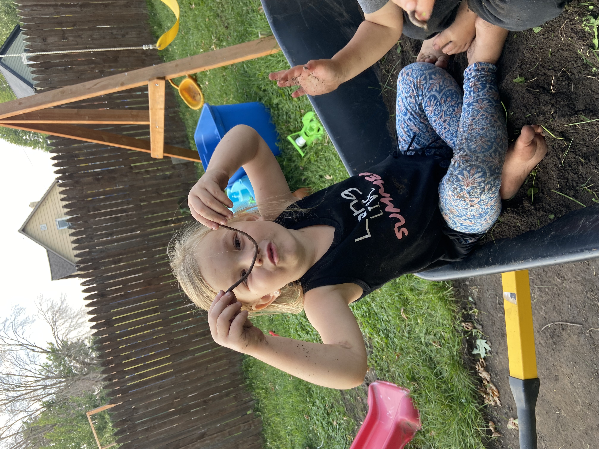
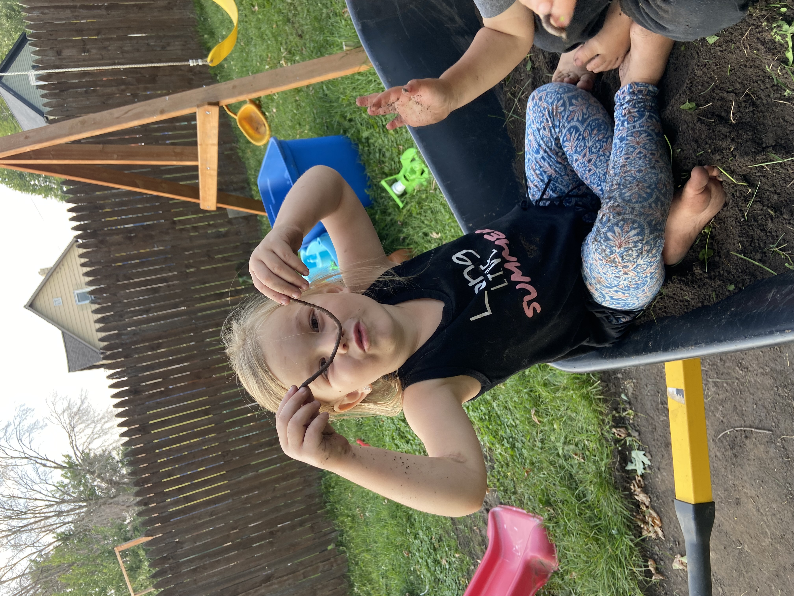
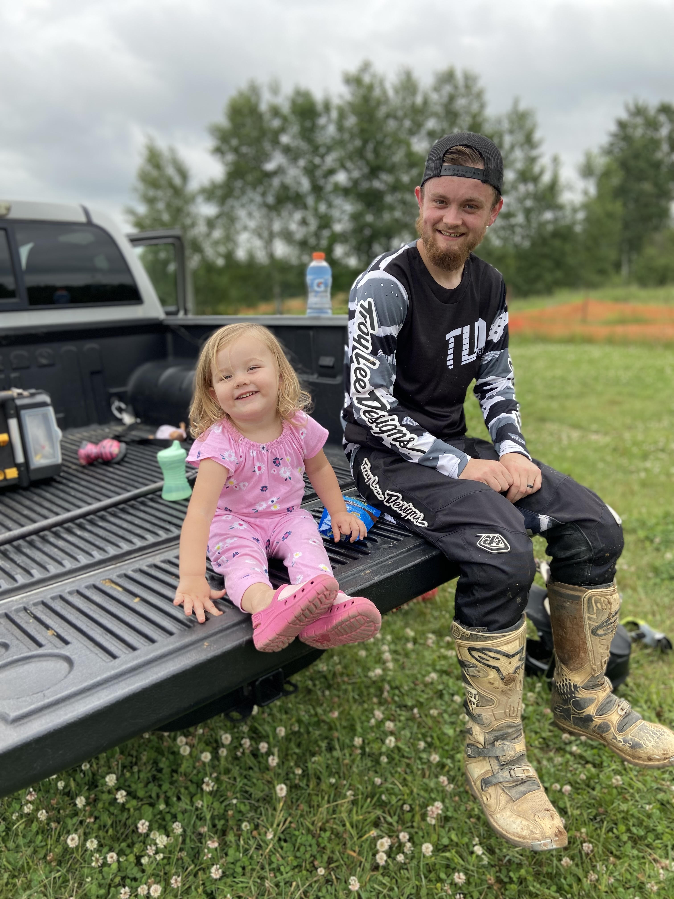
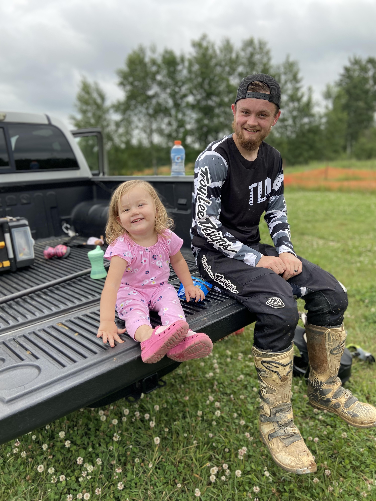
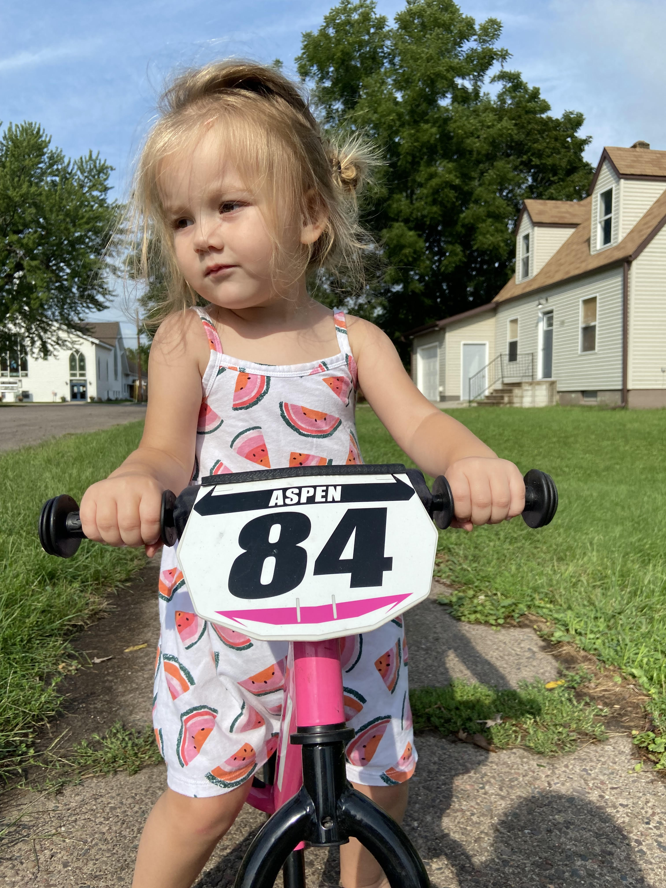
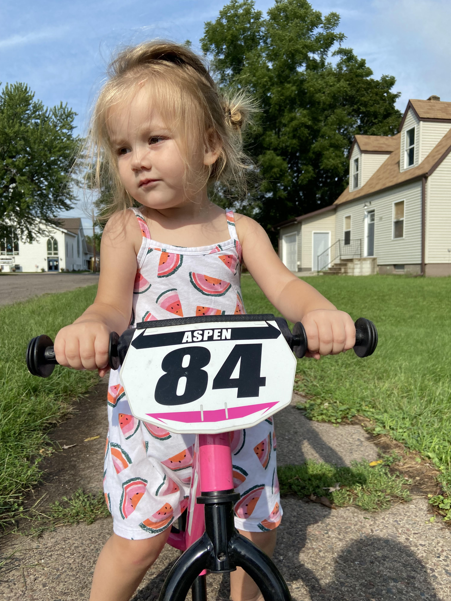

Our Hobbies
We love adventures—whether it’s camping, riding dirt bikes, or heading to the beach to splash in the
water and play in the sand, we’re always on the lookout for ways to have a great time together. I’ve
been racing motocross since I was five years old, and I still ride to this day. I can’t wait for the
moment when my kids can join me on the track. Aspen is already on her way, having mastered her
two-wheeled bike last year, and Oden isn’t far behind!
Some of our other favorite activities include trips to the playground, family bike rides, building
with Legos, and gathering around a bonfire to roast marshmallows. As the kids grow, I’m excited to
make new memories and explore new hobbies to add to our list of fun family traditions.
 

 

 
